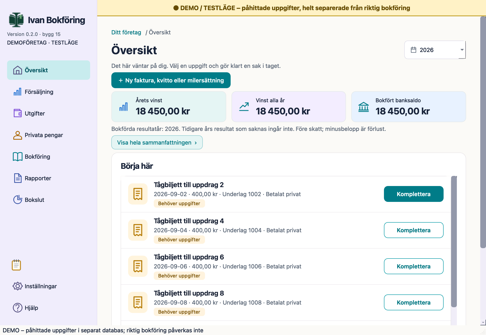
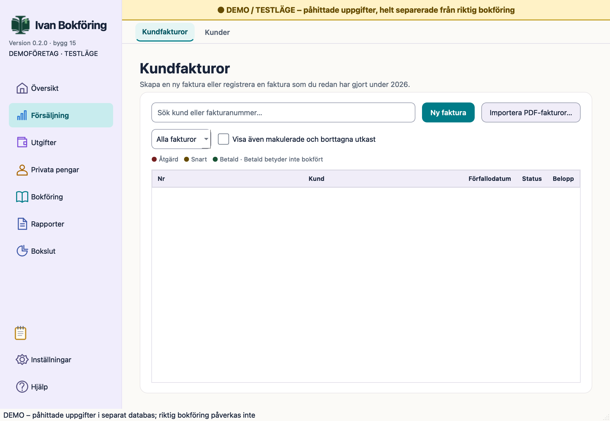
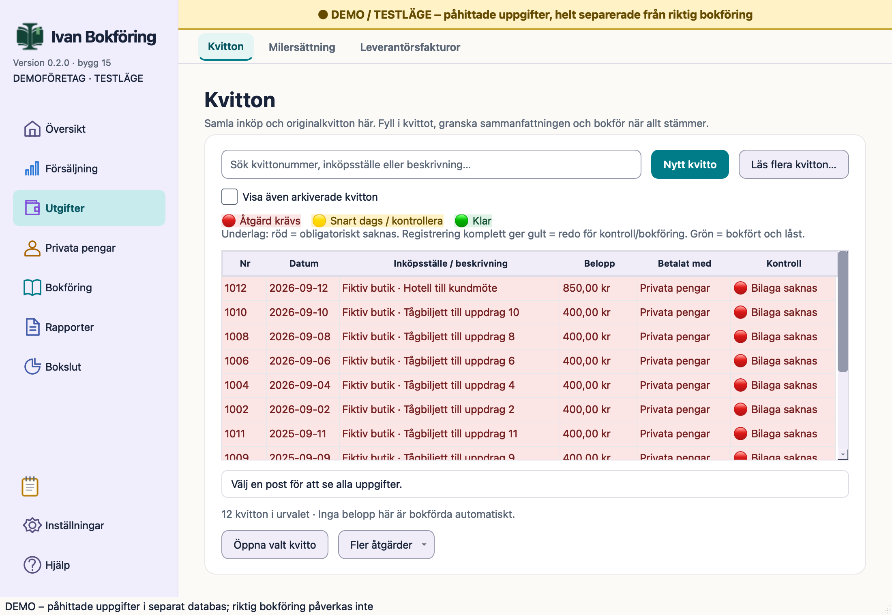
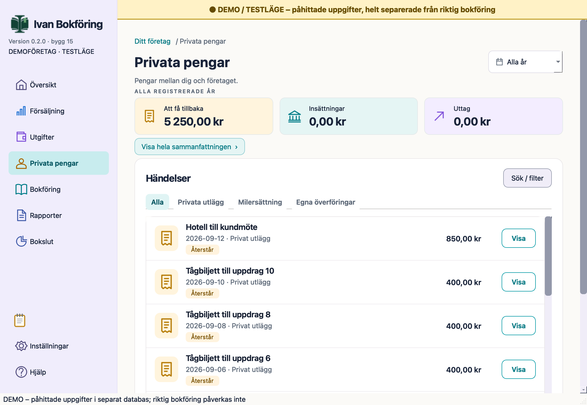
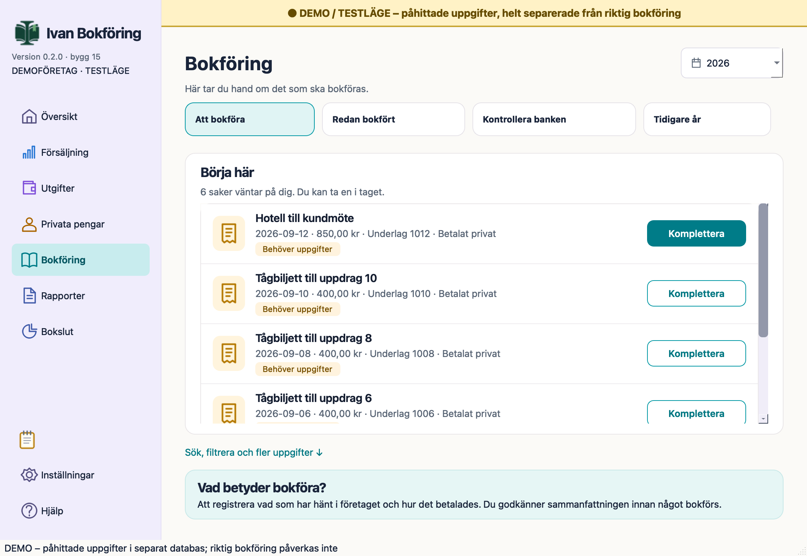
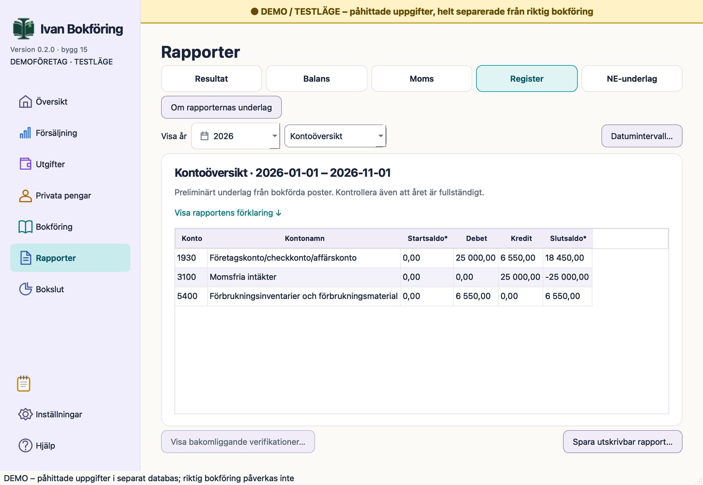
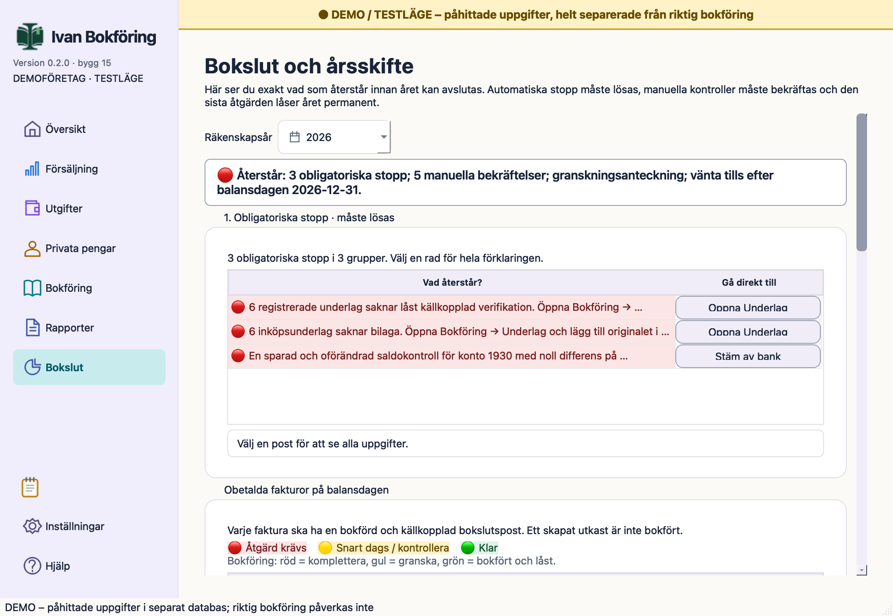
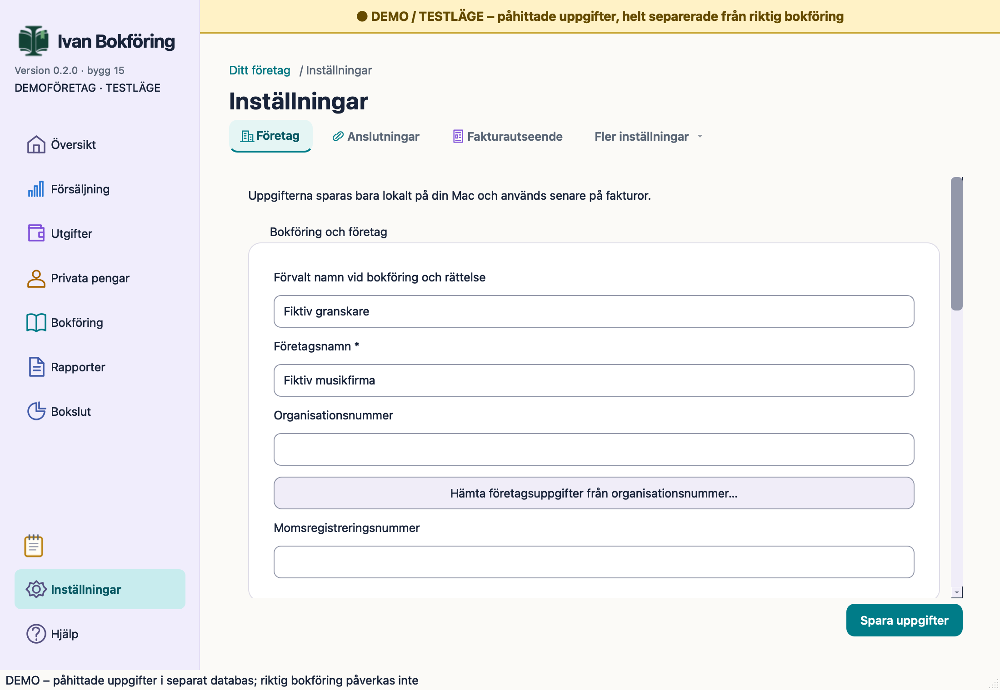
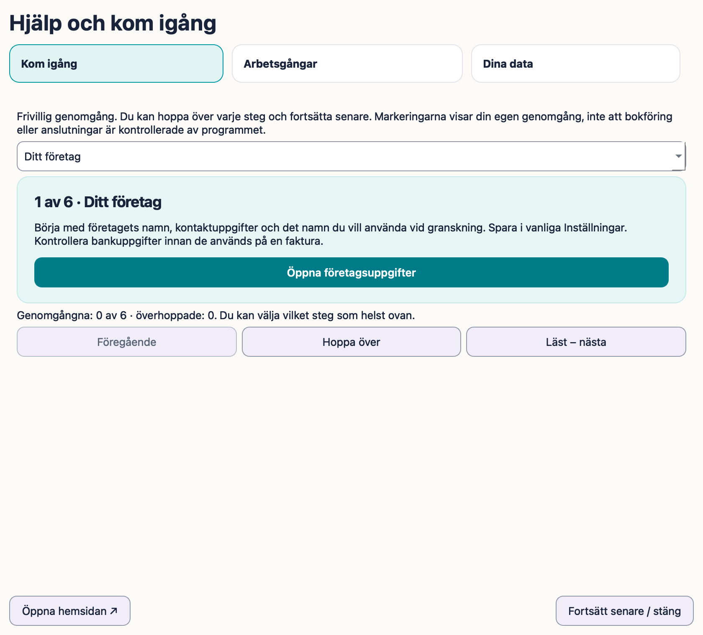

Samlad överblick
Valt år, vinst för bokförda resultatår och privata pengar med tydlig omfattning. Saknade historiska resultat visas som saknade.
TESTVERSION 0.2.0 · BYGG 15 · 1 NOVEMBER 2026
Fakturor, kvitton och bokföring på din Mac. Granska uppgifterna och fortsätt från underlaget till den låsta verifikationen.
Ladda ned 0.2.0 för Mac Kom igång Se programmets vyer
Testversion 0.2.0 för Apple Silicon och macOS 13 eller senare. Lokal ad-hoc-signatur; Apple Developer ID och notarisering saknas. Läs installationsanvisningen och kända begränsningar. Kontrollsumma.
Valt år, vinst för bokförda resultatår och privata pengar med tydlig omfattning. Saknade historiska resultat visas som saknade.
Tre mallar med PDF-förhandsvisning och frivillig logotyp eller vattenstämpel. Färdigställda fakturor behåller sitt sparade utseende.
Ett gemensamt lokalt block med autosparning och separat kopia/import. Företagsåterställning ersätter inte blocket.
Ny navigering, vinst för bokförda resultatår, gemensamma anteckningar, fakturamallar, frivillig introduktion och egen betalningspåminnelse. Sparade fakturor och låsta verifikationer behålls. Bokfört banksaldo undviker dubbelräknad ingående balans vid årsskifte.
Databasen uppgraderas till schema 33 efter verifierad säkerhetskopia. Säkerhetskopiera före versionsbyte och behåll datamappen. Äldre programversioner kan inte öppna den uppgraderade databasen. Anteckningarna har separat kopia och import.
VERKLIGA APPBILDER · FIKTIVA UPPGIFTER









FRIVILLIG GENOMGÅNG
Samma steg finns under Hjälp i programmet. Hoppa över och återuppta där. Hemsidan ändrar inga inställningar eller bokföringsuppgifter.
Börja med företagets namn, kontaktuppgifter och det namn du vill använda vid granskning. Spara i vanliga Inställningar. Kontrollera bankuppgifter innan de används på en faktura.
Programmet kan användas utan anslutningar. Gmail används för uttryckligt beställda mejl. SCB används när du väljer ett företagsuppslag. Inloggningar är frivilliga och kan tas bort i Anslutningar.
Har du redan bokföring? Granska startdatum, ingående balans och tidigare års obetalda fakturor under Tidigare år. Använd granskad koppling om en IB redan är bokförd. Skapa inte samma IB eller registrera samma betalning två gånger. Saknade historiska resultat antas inte vara noll.
Skapa en säkerhetskopia och välj vid behov lokal automatisk kopiering. Prova återställning till en separat arbetskopia. Anteckningsblocket har egen Spara kopia/Importera och ingår inte i företagskopian.
Välj mall och frivillig logotyp eller vattenstämpel. Förhandsvisa en PDF och spara standarden för nya fakturor. Äldre utkast byter bara efter ett eget granskat val; färdigställda fakturor behålls.
Läs vad som sparas lokalt och vad valda anslutningar skickar. Lokal lagring betyder inte krypterad lagring. Du kan alltid återvända till den här genomgången från Hjälp.
Skapa eller registrera fakturan i Försäljning. Granska kund, rader, moms och PDF. Skicka endast när du vill. Registrera den verkliga betalningen med datum och granska bank, konton och att den inte redan är bokförd. Lås och bokför först efter granskning. Rapporter kan öppna verifikationen och dess underlag.
Registrera inköpet eller resan under Utgifter, lägg till original och granska förslagen. Ange hur ett inköp betalats. Privata utlägg och senare återföring hanteras var för sig under Privata pengar. Spara en uppgift och bokföra den är skilda handlingar.
Kontrollera banken med importerade rader och sparad saldokontroll. Använd Tidigare år för granskade historiska fordringar/skulder och deras betalningar. Bokslut samlar årets kvarvarande kontroller. Ett avslutat år och låsta verifikationer ändras inte; rättelser har ett eget granskat spår.
Behåll originalet och de inmatade uppgifterna. Läs vad som behöver kompletteras. Efter ett osäkert Gmail-svar ska Skickat kontrolleras; appen gör inte ett automatiskt nytt fakturautskick. Använd separat återställd kopia när du behöver kontrollera en säkerhetskopia.
Företagsuppgifter, kunder, fakturor, bokföring, bankimporter och arbetsutkast sparas i företagets SQLite-databas. Original och PDF-filer sparas i dokumentmappen. PDF- och bildavläsning sker lokalt; förslag behöver granskas. Logotyp och vattenstämpel kopieras lokalt. Anteckningar sparas separat per programprofil och har separat textkopia/import.
SQLite, anteckningar och ZIP-säkerhetskopior har ingen egen appkryptering eller lösenordsspärr. Skydda ditt Mac-konto och lagringsplatsen. En mapp som du synkar med iCloud eller annan tjänst kan synkas av den tjänsten. Företagsåterställning sker till en separat arbetskopia och ersätter inte automatiskt anteckningsblocket.
Ett beställt SCB-uppslag skickar sökuppgiften och din SCB-behörighet till SCB. Gmail-inloggning sker hos Google; appen begär verifierad e-postidentitet och rätt att skicka mejl. Anslutningen sparas i macOS Nyckelhanterare, med kortlivad åtkomst i minnet. Appen begär inte rätt att läsa din inkorg. När du bekräftar ett fakturautskick skickas granskad mottagare, mejltext och PDF via Gmail. Utskicksstatus sparas lokalt; Gmail-acceptans är inte en läsbekräftelse.
En frivillig, granskad plan sparar datum, egen verifierad Gmail-adress och mejltext i företagsdatabasen. Den aktiveras först efter ett bekräftat fakturautskick och kan skickas när appen körs eller vid nästa start. Ingen kundpåminnelse, molnschemaläggning, bankkontroll eller inkorgsläsning görs. Byte av Gmail-konto pausar planen. Osäkert eller påbörjat utskick skickas inte automatiskt igen; kontrollera Skickat och redovisa utfallet. Demo och återställda arbetskopior skickar inga påminnelser.
Uppdateringsfunktionen Sparkle kan hämta versionsinformation och programpaket från den valda uppdateringskanalen. Hemsida, Google-inloggning och externa hjälplänkar öppnas i webbläsaren. De tjänsterna får då vanliga nätverksuppgifter. Att bara öppna ett lokalt bokföringsunderlag skickar inte det till en sådan tjänst.
Paketet är byggt för den här Macens Apple Silicon-miljö. Annan Mac, Intel och macOS 13 har inte körtestats. Developer ID och notarisering saknas i testkanalen. Tidigare observerad NSAccessibility-krasch är fortfarande inte bevisat löst.
Gmail- och påminnelseflöden provas med simulerade svar. Inga riktiga testmejl skickas utan separat beställning.